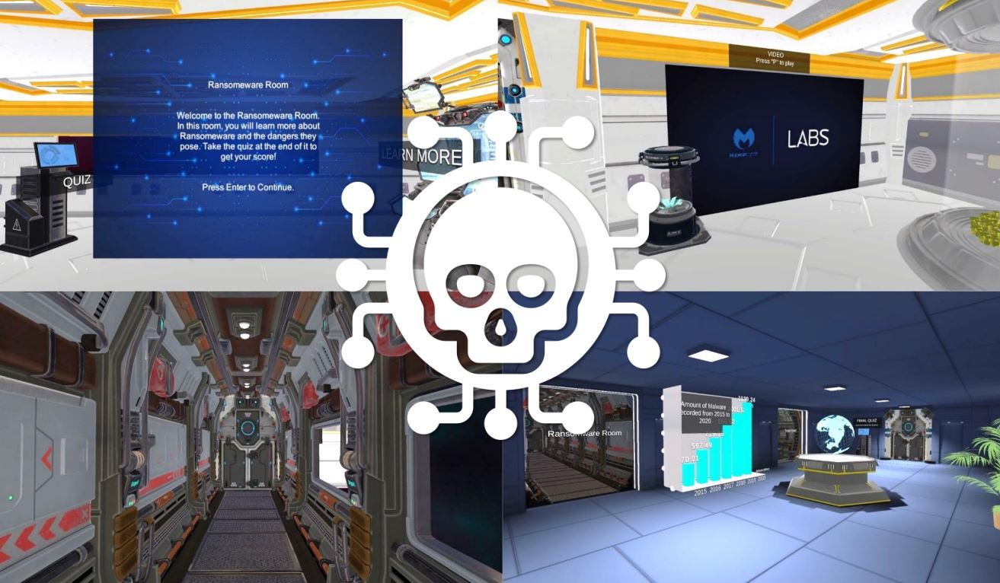
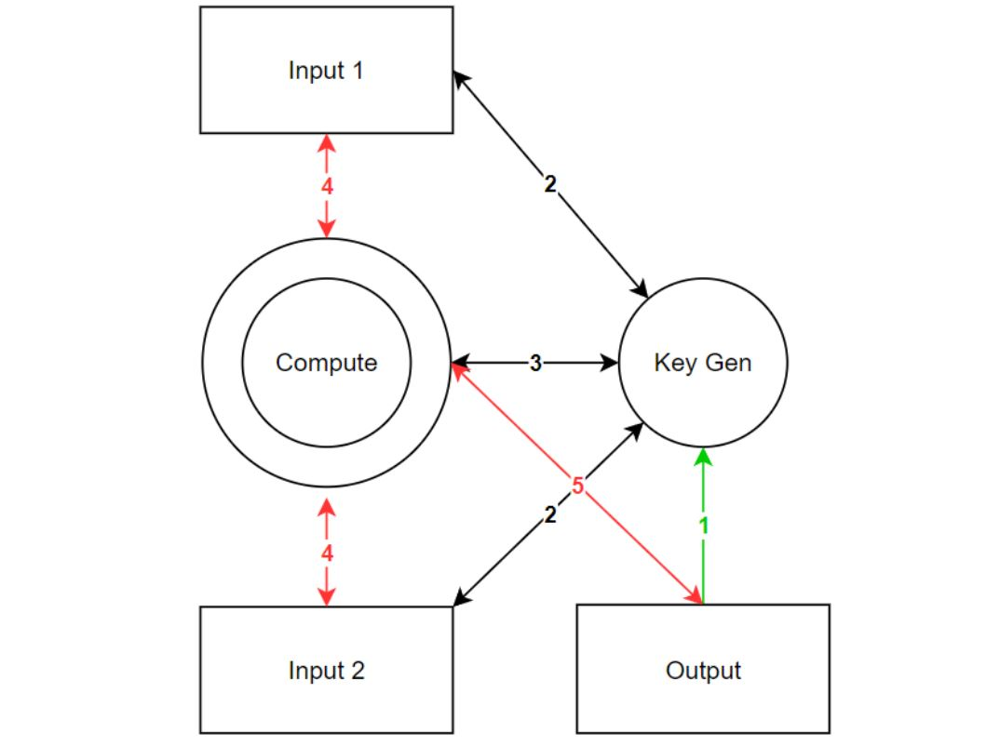
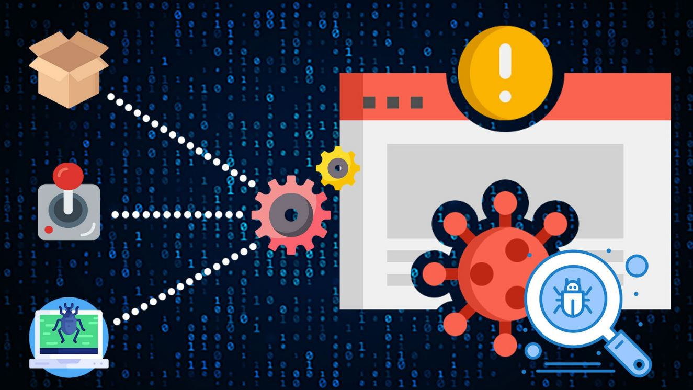
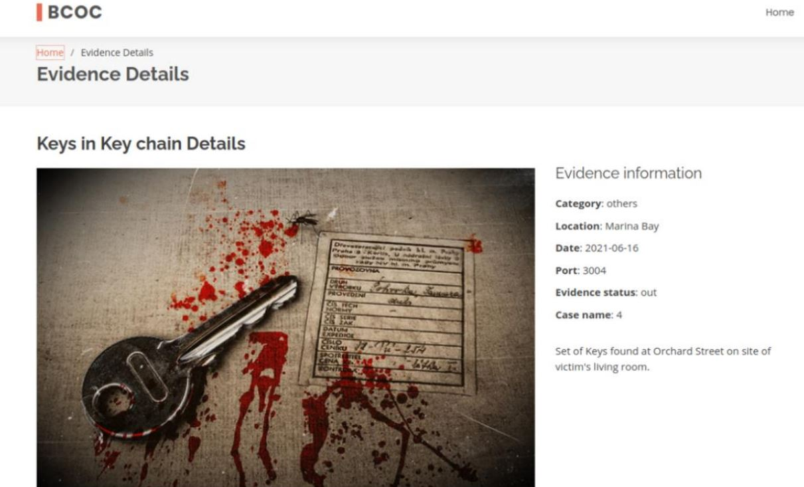
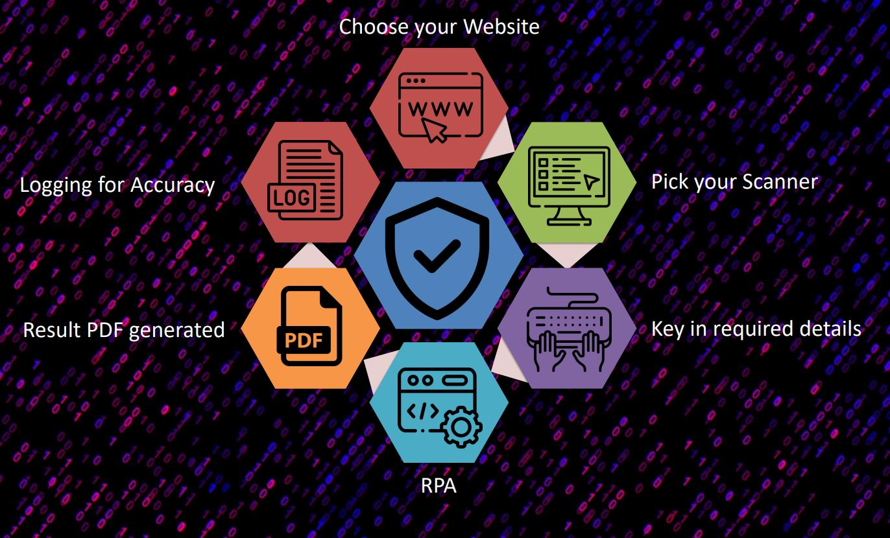

Projects
Seminars
IIT Courses
About
Centres of Excellence
Projects
Seminars
IIT Courses
Centres of Excellence
About
Getting To TP
Cybersecurity & Digital Forensics
Other Projects

Data Scraping with RPA

FoodBuy – An E2E Business Solution

GreenTrek Mobile Application

Interactive Chatbot for AMS
SGenius Student Learning Portal

One Stop Fitness
TP InfoTech Day 2022 Microsite
TPsecureKeys Key Management System